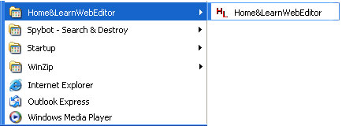
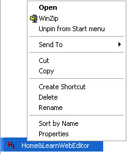
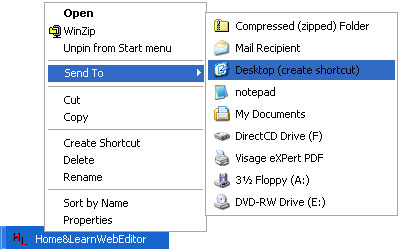

Free
computer Tutorials
|
Free
computer Tutorials
|
|
 home home |
Stay at Home and Learn | ||||
How to create a Desktop Shortcut in Windows XP
To create a shortcut to a programme, and display the shortcut on the Desktop, do the following:



Now that you've had a bit of practice with your mouse, we'll move
on to exploring the files and folders on your hard drive. We'll start with the Hard Drive itself.
<--Back One Page Move on to the Next Part--> |
|||||
|